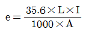
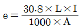
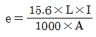
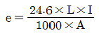
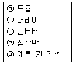
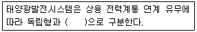

신재생에너지발전설비산업기사 (2017-03-05 기출문제)
1과목: 태양광 발전 시스템 이론
1. 태양전지 모듈의 가로가 1.6m, 세로가 1m이고, 변환효율이 10%인 경우의 충진율(FF)은? (단, VOC=40V, ISC=8A이고, 표준시험 조건이다.)
- 0.50
- 0.65
- 0.70
- 0.80
(정답률: 68%)

2. 태양전지 모듈 내에 태양전지 셀의 결함 또는 열화로 인한 출력저하를 방지하고 발열을 억제하기 위하여 사용하는 것은?
- 리드선
- 충전재
- 바이패스 소자
- 알루미늄 프레임
(정답률: 87%)
3. 궤도전자가 강한 에너지를 받아서 원자 내의 궤도를 이탈하여 자유전자가 되는 것은?
- 방사
- 전리
- 공진
- 여기
(정답률: 78%)
4. 다음 중 결정질 태양전지의 에너지 손실에서 가장 큰 부분은?
- 전면 접촉으로 초래된 반사와 차광
- 공간 전하 영역에서의 전지의 전위차
- 장파장 복사에서 너무 낮은 광자 에너지
- 단파장 복사에서 너무 높은 광자 에너지
(정답률: 77%)
5. 전기설비의 안전에 관한 일반적인 사항이 아닌 것은?
- 전기설비의 접지와 전축물의 피뢰설비 및 통신설비 등을 통합접지공사를 할 수 있다.
- 전선배관 등의 관통부는 화재 확산을 방지하기 위해서 관통부 처리를 하여야 한다.
- 전기실의 소화설비로는 이산화탄소, 청정소화약제 등을 사용할 수 있다.
- 유입변압기는 반드시 옥내 설치가 권장된다.
(정답률: 76%)
6. 태양광발전시스템의 구성요소 중 인버터의 역할은?
- 직류→교류로 변환
- 교류→직류로 변환
- 교류→교류로 변환
- 직류→직류로 변환
(정답률: 92%)
7. 태양광 모듈의 최대출력(Pmpp)의 의미는?
- I × V
- Impp × V
- I × Vmpp
- Impp × Vmpp
(정답률: 87%)
8. 다음 중 지구 대기의 영향을 받지 않은 우주에서의 태양복사에너지 대기 질량(AM)은 무엇인가?
- AM0
- AM1
- AM2
- AM3
(정답률: 88%)
9. N형 반도체의 다수캐리어는?
- 양성자
- 중성자
- 전자
- 정공
(정답률: 83%)
10. 반동수차의 종류가 아닌 것은?
- 펠톤수차
- 카플란수차
- 프란시스수차
- 프로펠러수차
(정답률: 74%)
11. 단결정 실리콘 태양전지의 특징이 아닌 것은?
- 색이 검은색이다.
- 무늬가 다양하다.
- 단단하고, 구부러지지 않는다.
- 제조에 필요한 온도가 약 1400℃로 높다.
(정답률: 83%)
12. 직격뢰와 유도뢰에 대한 설명이 아닌 것은?
- 직격뢰는 에너지가 매우 작다.
- 유도뢰에 의한 순간적인 전압상승을 뇌서지라고 한다.
- 정전유도에 의한 유도뢰는 케이블에 유도된 플러스 전하가 낙뢰로 인한 지표면 전하의 중화에 의해 뇌서지가 된다.
- 전자유도에 의한 유도뢰는 케이블 부근에 낙뢰로 인한 뇌전류에 따라 케이블에 유도되어 뇌서지가 된다.
(정답률: 86%)
13. 실시간으로 변화하는 일사강도에 따라 태양광인버터가 최대 출력점에서 동작하도록 하는 기능은?
- 자동운전정지 기능
- 단독운전방지 기능
- 자동전류조정 기능
- 최대전력 추종제어 기능
(정답률: 90%)
14. 피뢰소자 중 내뢰트랜스의 선정방법으로 옳지 않은 것은?
- 전기특성이 양호한 것으로 선정한다.
- 1차측, 2차측의 전압 및 용량을 결정하고 카달로그에 의해 형식을 선정한다.
- 내뢰트랜스로 보호할 수 없는 경우에만 어레스터와 서지업서버를 사용한다.
- 1차측과 2차측 간에 실드판이 있고, 이 판수가 많을수록 뇌서지에 대한 억제 효과도 높아지므로 많은 것을 선정한다.
(정답률: 70%)
15. 고주파 변압기 절연방식과 트랜스리스 방식의 계통연계 인버터는 출력전류에 중첩되는 직류분이 정격교류 최대전류의 몇 % 이하로 유지해야 하는가?
- 0.5
- 5
- 10
- 20
(정답률: 56%)
16. 부하의 허용 최저전압이 92V, 축전지와 부하간 접속선의 전압강하가 3V 일 때, 직렬로 접속한 축전지의 개수가 50개라면 축전지 한 개의 허용 최저 전압은 몇 V/cell 인가?
- 1.9V/cell
- 1.8V/cell
- 1.6V/cell
- 1.5V/cell
(정답률: 78%)
17. 장거리 전력 전송에 고전압이 사용되는 이유가 아닌 것은?
- 송전용량이 증가한다.
- 전력손실이 감소한다.
- 선로절연이 낮아지므로 건설비가 감소한다.
- 동일 용량의 전력을 송전할 경우 송전선의 굵기를 줄일 수 있다.
(정답률: 73%)
18. 다음 중 재생에너지에 해당하지 않는 것은?
- 풍력
- 지열 에너지
- 태양 에너지
- 수소 에너지
(정답률: 89%)
19. 뇌서지 내성 및 노이즈 차단특성이 우수하나, 중량부피가 큰 인버터 절연방식은?
- 상용주파 절연방식
- 무변압기 절연방식
- 고주파 절연방식
- 접지 절연방식
(정답률: 75%)
20. 방사강도가 1000W/m2이고, 태양전지의 출력이 36w 일 때 태양전지의 광전변환 효율 [%]은? (단, 태양전지의 면적은 0.5m2 이다.)
- 1.8
- 3.6
- 7.2
- 9.6
(정답률: 62%)
2과목: 태양광 발전 시스템 시공
21. 3상 3선 전압강하 계산식으로 옳은 것은?




(정답률: 78%)
22. 인버터와 변전설비 간 케이블트레이를 설치할 수 경우 전압이 교류 380V 라면 케이블트레이의 접지방식으로 적당한 것은?
- 제1종 접지공사
- 제2종 접지공사
- 제3종 접지공사
- 특별 제1종 접지공사
(정답률: 81%)
23. 태양광발전시스템의 일반적인 시공 순서로 옳은 것은?

- ㉠ → ㉡ → ㉣ → ㉢ → ㉤
- ㉠ → ㉤ → ㉢ → ㉡ → ㉣
- ㉠ → ㉣ → ㉡ → ㉤ → ㉢
- ㉠ → ㉢ → ㉤ → ㉣ → ㉡
(정답률: 86%)
24. 가공송전 선로에 사용되는 전선의 구비 조건이 아닌 것은?
- 내구성이 있을 것
- 도전율이 높을 것
- 비중(밀도)이 높을 것
- 가선작업이 용이할 것
(정답률: 79%)
25. 감리용역 계약문서가 아닌 것은?
- 과업 지시서
- 공사입찰 유의서
- 감리비 산출내역서
- 기술용역계약 일반조건
(정답률: 63%)
26. 태양전지 모듈 및 어레이 설치 후 확인 및 점검사항이 아닌 것은?
- 비접지 확인
- 개방전류 측정
- 전압극성의 확인
- 모듈전압의 확인
(정답률: 70%)
27. 접지극에 사용되지 않는 것은?
- 동판
- 탄소피복강
- 알루미늄봉
- 동피복강봉
(정답률: 79%)
28. 수전단 전압이 공전단 전압보다 높아지는 현상은?
- 표피효과
- 코로나 현상
- 역섬락 현상
- 페란티 현상
(정답률: 79%)
29. 최대수용전력이 600kVA 이고 설비용량은 전등부하 350kW, 동력부하 500kVA 이다. 이때 수용률[%]은?
- 31.80
- 52.62
- 70.58
- 79.62
(정답률: 72%)
30. 비상주 감리원의 업무에 해당하지 않는 것은?
- 중요한 설계변경에 대한 기술검토
- 설계변경 및 계약금액 조정의 심사
- 근무상황판에 현장근무위치와 업무내용 기록
- 정기적(분기 또는 월별)으로 현장 시공상태를 종합적으로 점검·확인·평가하고 기술지도
(정답률: 72%)
31. 다음 ( )안의 알맞은 내용으로 옳은 것은?

- 계통연계형
- 병렬연계형
- 복합연계형
- 단독연계형
(정답률: 87%)
32. 태양전지 어레이의 구조물을 지상에 설치하기 위한 기초의 종류 중 지지층이 얕을 경우 쓰이는 방식은?
- 말뚝기초
- 직접기초
- 연속기초
- 케이슨기초
(정답률: 78%)
33. 옥내용 태양광 인버터를 옥외에 설치할 수 있는 용량은 몇 kW 이상인가?
- 1
- 2
- 3
- 5
(정답률: 67%)
34. 창문 상부 등 건물 외부에 가대를 설치하고 그 위에 태양광 모듈으르 설치한 형태는?
- 경사지붕형
- 벽 건재형
- 루버형
- 차양형
(정답률: 71%)
35. 태양광발전시스템에 있어서 방화구획 관통부를 처리하는 주된 목적은?
- 방화설비의 사용 용이
- 전선관 및 배선의 보호
- 화재감지기 오작동 방지
- 다른 설비로의 화재 확산 방지
(정답률: 87%)
36. 태양광발전설비의 준공검사 시 확인사항이 아닌 것은?
- 시설물의 유지관리 방법
- 감리원의 준공 검사원에 대한 검토의견서
- 제반 가설시설물의 제거와 원상복구 정리 상황
- 완공된 시설물이 설계도서대로 시공되었는지 여부
(정답률: 62%)
37. 변전소에서 무효전력을 조정하는 전기설비로 옳은 것은?
- 변성기
- 피뢰기
- 축전지
- 조상설비
(정답률: 81%)
38. 직류 송전방식의 장점이 아닌 것은?
- 안정도가 좋다.
- 송전효율이 좋다.
- 절연계급을 낮출 수 있다.
- 회전자계를 쉽게 얻을 수 있다.
(정답률: 75%)
39. 설계감리 업무 수행 시 설계감리원이 비치하여 설계감리과정을 기록하여야 하는 문서가 아닌 것은?
- 근무상황부
- 설계감리일지
- 안전교육실적표
- 설계감리 검토의견 및 조치 결과서
(정답률: 70%)
40. 지붕에 설치하는 태양광발전시스템 중 톱 라이트형의 특징이 아닌 것은?
- 채광 및 셀에 의한 차광효과도 있다.
- 셀의 배치에 따라서 개구율을 바꿀 수 있다.
- 중·고층 건물의 벽면을 유효하게 이용한다.
- 톱 라이트의 유리 부분에 맞게 태양전지 유리를 설치한 타입이다.
(정답률: 72%)
3과목: 태양광 발전 시스템 운영
41. 접지용구 사용 시 주의사항이 아닌 것은?
- 접지용구의 철거는 설치의 역순으로 한다.
- 접지 설치 전에 관계 개폐기의 개방을 확인하여야 한다.
- 접지용구의 취급은 반드시 전기안전관리자의 책임하에 행하여야 한다.
- 접지용구 설치·철거 시에는 접지도선이 신체에 접촉하지 않도록 주의한다.
(정답률: 78%)
42. 태양광발전시스템의 점검에서 유지보수 점검 종류가 아닌 것은?
- 일시점검
- 일상점검
- 정기점검
- 임시점검
(정답률: 70%)
43. 주위온도 20℃, 상대습도 65%의 환경에서, 대지전압이 150V 초과 300V 미만인 경우에 배전반 회로의 절연상태를 점검하려고 한다. 회로의 전선과 대지 사이의 절연저항은 몇 MΩ 이상이어야 하는가?
- 0.1
- 0.2
- 0.3
- 0.4
(정답률: 78%)
44. 중간단자함(접속함)의 육안점검 항목으로 틀린 것은?
- 배선의 극성
- 개방전압 및 극성
- 단자대 나사의 풀림
- 외함의 부식 및 파손
(정답률: 75%)
45. 정전작업 중 조치사항에 대한 설명으로 틀린 것은?
- 개폐기 관리
- 단락접지기구의 철거
- 작업지휘자에 의한 작업지시
- 근접 활선에 대한 방호상태의 관리
(정답률: 82%)
46. 배전반 제어회로의 배선에서 일상점검 항목이 아닌 것은?
- 조임부의 이완 여부 확인
- 전선 지지물의 탈락 여부 확인
- 과열에 의한 이상한 냄새 여부 확인
- 가동부 등의 연결전선의 절연피복 손상 여부 확인
(정답률: 62%)
47. 태양광발전시스템 인버터의 일상점검 항목으로 틀린 것은?
- 절연저항 측정
- 외함의 부식 및 파손
- 외부배선(접속케이블)의 손상
- 이음, 이취, 연기 발생 및 이상 과열
(정답률: 79%)
48. 결정질 실리콘 태양광발전 모듈의 인증 제품에 대한 표시사항으로 틀린 것은?
- 제품의 단가
- 인증부여 번호
- 설비명 및 모델명
- 제품의 주요 사항
(정답률: 91%)
49. 태양광발전시스템 모듈의 고장으로 틀린 것은?
- 핫 스팟
- 백화현상
- 프레임 변형
- 부스바 과열
(정답률: 62%)
50. 신·재생에너지설비 KS인증 대상 품목 중 태양광 설비의 대상 품목이 아닌 것은?
- 소형 태양광 발전용 인버터
- 박막 태양광발전 모듈(성능)
- 특대형 태양광 발전용 인버터
- 결정질 실리콘 태양광발전 모듈(성능)
(정답률: 70%)
51. 인버터 입력회로 절연저항 특정방법에 대한 설명으로 틀린 것은?
- 분전반 내의 분기차단기를 개방한다.
- 직류측 전체의 입력단자와 교류측 전체 출력단자를 각각 단락한다.
- 접속함까지의 전로를 포함하여 절연저항을 측정하는 것으로 한다.
- 태양전지 회로를 접속함에서 분리하여 인버터의 입력단자 및 출력단자를 각각 단락하면서 출력단자와 대지간의 절연저항을 측정한다.
(정답률: 58%)
52. 동작 불량의 스트링이나 태양전지 모듈의 검출 및 직렬 접속선의 결선 누락사고 등을 검출하기 위한 측정으로 옳은 것은?
- 단락전류 측정
- 절연저항 측정
- 개방전압 측정
- 정격전류 측정
(정답률: 60%)
53. 모니터링 시스템의 운영 점검사항으로 틀린 것은?
- 센서 접속 이상 유무
- 가대 등의 녹 발생 유무
- 인버터 모니터링 데이터 이상 유무
- 인터넷 접속상태 및 통신단자 이상 유무
(정답률: 84%)
54. 자가용 태양광 발전설비 정기검사 항목이 아닌 것은?
- 변압기 검사
- 태양광 전지 검사
- 부하운전시험 검사
- 전력변환장치 검사
(정답률: 73%)
55. 바이패스 다이오드 열 시험을 진행 시 STC에서 단락전류의 몇 배와 같은 전류를 적용하는가?
- 1.1
- 1.25
- 1.5
- 2
(정답률: 53%)
56. 송·변전설비 중 배전반에서 주회로 인입·인출부의 일상 점검 내용이 아닌 것은?
- 볼트류 등의 조임 상태 확인
- 쥐, 곤충 등의 침입 여부 확인
- 표시기, 표시등의 정확 유무 확인
- 코로나 방전에 의한 이상음 여부 확인
(정답률: 54%)
57. 전기사업의 허가기준으로 틀린 것은?
- 전기사업이 계획대로 수행될 수 있을 것
- 전기사업을 적정하게 수행하는데 필요한 재무능력 및 기술능력이 있을 것
- 발전소나 발전연료가 특정 지역에 편중되어 전력통계의 운영에 지장을 주지 아니할 것
- 그 밖에 공익상 필요한 것으로서 산업통상자원부령으로 정하는 기중에 적합할 것
(정답률: 53%)
58. 태양광발전시스템 인버터의 시험항목으로 틀린 것은?
- 절연성능시험
- 정상특성시험
- 전기자기 적합성
- 과열점 내구성 시험
(정답률: 55%)
59. 태양광 모듈의 유지관리 사항아 아닌 것은?
- 모듈의 유리표면 청결 유지
- 음영이 생기지 않도록 주변정리
- 셀이 병렬로 연결되었는지 여부
- 케이블 극성 유의 및 방수 커넥터 사용 여부
(정답률: 81%)
60. 태양광발전시스템 성능평가를 위한 사이트 평가방법이 아닌 것은?
- 설치용량
- 시공업자
- 발전성능
- 설치대상기관
(정답률: 48%)
4과목: 신재생 에너지 관련 법규
61. 저압 옥내배선에 사용하는 연동선의 최소 굵기는 몇 mm2이상인가?
- 2
- 2.5
- 4
- 6
(정답률: 86%)
62. 연료전지 및 태양전지 모듈은 최대사용전압의 1.5배의 직류전압 또는 1배의 교류전압(500V 미만으로 되는 경우에는 500V)을 충전부분과 대지 사이에 연속하여 몇 분간 가하여 절연내력을 시험하였을 때에 이에 견디는 것이어야 하는가?
- 5
- 10
- 15
- 20
(정답률: 83%)
63. 계통연계하는 분산형전원을 설치하는 경우 이상 또는 고장 발생의 경우가 아닌 것은?
- 단독운전 상태
- 분산형전원의 이상 또는 고장
- 연계형 변압기 중성점 접지시설
- 연계한 전력계통의 이상 또는 고장
(정답률: 68%)
64. 기업이 경영활동에서 자원과 에너지를 절약하고 효율적으로 이용하며 온실가스 배출 및 환경오염의 발생을 최소화 하면서 사회적, 윤리적 책임을 다하는 경영은?
- 녹색기술
- 녹색산업
- 녹색생활
- 녹색경영
(정답률: 28%)
65. 물의 표층의 열을 변환시켜 에너지를 생산하는 설비는?
- 전력저장 설비
- 수열에너지 설비
- 해양에너지 설비
- 폐기물에너지 설비
(정답률: 85%)
66. 피뢰기 설치장소로 틀린 것은?
- 가공전선로와 지중전선로가 접속하는 곳
- 저압 가공전선로로부터 공급을 받는 수용장소의 인입구
- 고압 및 특고압 가공전선로로부터 공급을 받는 수용장소의 인입구
- 발전소·변전소 또는 이에 준하는 장소의 가공전선 인입구 및 인출구
(정답률: 70%)
67. 전기공사기술자가 다른 사람에게 경력수첩을 6개월 미만 빌려준 경우 받게 되는 처분기준은?
- 인정정지 1년
- 인정정지 2년
- 인정정지 3년
- 인정정지 6개월
(정답률: 69%)
68. 산업통상자원부장관이 혼합의무자에게 제출을 요구할 수 있는 자료 중 신·재생에너지 연료 혼합의무 이행확인에 관한 자료의 내용이 아닌 것은?
- 수송용연료의 생산량
- 수송용연료의 수출입량
- 수송용연료의 내수판매량
- 수송용연료의 자가발전량
(정답률: 55%)
69. 전기안전관리자의 선임신고사항 변경신고에서 산업통상자원부령으로 정하는 사항으로 전기사업자나 자가용전기설비의 소유자 또는 점유자에 관한 사항으로 틀린 것은?
- 회사명 또는 상호
- 전기설비의 설치단가
- 전기설비 설치장소의 주소
- 전기설비의 용량 또는 전압
(정답률: 85%)
70. 신·재생에너지 설비 설치의무기관 중 대통령령으로 정하는 비율 또는 금액 이상을 출자한 법인이란?
- 납입자본금의 100의 10 이상을 출자한 법인
- 납입자본금의 100의 30 이상을 출자한 법인
- 납입자본금의 100의 50 이상을 출자한 법인
- 납입자본금의 100의 70 이상을 출자한 법인
(정답률: 71%)
71. 옥내에 시설하는 저압용 배전반 및 분전반의 시설 방법으로 틀린 것은?
- 한 개의 분전반에는 두 가지 전원(2회선의 간선)만 공급할 것
- 노출하여 시설되는 배전반 및 분전반은 불연성 또는 난연성의 것을 시설할 것
- 배전반 및 분전반은 전기회로를 쉽게 조작할 수 있고 쉽게 점검할 수 있는 장소에 시설할 것
- 노출된 충전부가 있는 배전반 및 분전반은 취급자 이외의 사람이 쉽게 출입할 수 없도록 시설할 것
(정답률: 75%)
72. 타인의 전기설비 또는 구내발전설비로부터 전기를 공급받아 구내배전설비로 전기를 공급하기 위한 전기설비로서 수전지점으로부터 배전반(구내배전설비로 전기를 배전하는 전기설비를 말한다.)까지의 설비는?
- 발전설비
- 송전설비
- 보호설비
- 수전설비
(정답률: 72%)
73. 산업통상자원부장관은 신·재생에너지 설비의 설치계획서 제출에 대하여 2016년 1월 1일을 기준으로 몇 년마다 그 타당성을 검토하여 개선 등의 조치를 하여야 하는가?
- 2
- 3
- 5
- 10
(정답률: 57%)
74. 발전기·변압기·조상기·계기용변성기·모선 및 애자는 어떤 전류에 의하여 생기는 기계적 충격에 견디어야 하는가?
- 충전전류
- 정격전류
- 단락전류
- 유도전류
(정답률: 67%)
75. 저압 및 고압 가공전선로(전기철도용 급전선로는 제외)와 기설 가공약전류전선로가 병행하는 경우 요도작용에 의하여 통신상의 장해가 생기지 않도록 전선과 기설 약전류 전선간의 이격거리는 최소 몇 m 이상으로 하여야 하는가?
- 0.5
- 1
- 1.5
- 2
(정답률: 59%)
76. 정부가 중소기업의 녹색기술 및 녹색경영을 촉진하기 위하여 수립·시행할 수 있는 시책으로 틀린 것은?
- 중소기업의 녹색기술 사업화의 촉진
- 녹색기술 개발 촉진을 위한 공공시설의 이용
- 대기업과 중소기업의 공동사업에 대한 우선지원
- 해외전문연구소의 중소기업에 대한 기술지도·기술이전 및 기술인력 파견에 대한 지원
(정답률: 57%)
77. 산업통상자원부장관은 발전차액을 반환할 자가 며칠 이내에 이를 반환하지 아니하면 국세체납처분의 예에 따라 징수할 수 있는가?
- 15
- 30
- 45
- 60
(정답률: 76%)
78. 대통령령으로 정하는 신·재생에너지 연료의 기준 및 범위에 해당하는 연료로 틀린 것은? (단, 폐기물관리법에 따른 폐기물을 이용하여 제조한 것은 제외한다.)
- 액화석유가스
- 동물·식물의 유지(油脂)를 변환시킨 바이오디젤
- 중질잔사유를 가스화한 공정에서 얻어지는 합성가스
- 생물유기체를 변환시킨 바이오가스, 바이오에탄올, 바이오액화유 및 합성가스
(정답률: 74%)
79. 전력수급의 안정을 위하여 대통령령으로 정하는 기본계획의 경비한 사항을 변경하는 경우로 틀린 것은?
- 전기설비별 용량의 20%의 범위에서 그 용량을 변경하는 경우
- 연도별 전기설비 총용량의 5%의 범위에서 그 총용량을 변경하는 경우
- 전기설비 설치공사의 착공 또는 준공 등의 기간을 2년의 범위에서 조정하는 경우
- 전기설비 설치공사 시 총공사비의 10%의 범위에서 그 총공사비를 변경하는 경우
(정답률: 52%)
80. 케이블 트레이공사에 사용하는 케이블 트레이에 대한 설명으로 틀린 것은?
- 비금속제 케이블 트레이는 난연성 재료의 것이어야 한다.
- 전선의 피복 등을 손상시킬 돌기 등이 없이 매끈하여야 한다.
- 수용된 모든 전선을 지지할 수 있는 적합한 강도로 케이블 트레이의 안전율은 1.3 이상으로 하여야 한다.
- 케이블 트레이가 방화구획의 벽, 마루, 천장 등을 관통하는 경우에 관통부는 불연성의 물질로 충전하여야 한다.
(정답률: 72%)
따라서, 전압과 전류의 최대값을 곱한 값은 40V x 8A = 320W이다.
태양전지 모듈의 출력은 변환효율에 따라 320W의 일부이다. 변환효율이 10%이므로, 출력은 320W x 0.1 = 32W이다.
충전율(FF)은 출력(32W)을 VOC x ISC로 나눈 값이다.
FF = (32W / (40V x 8A)) = 0.50
따라서, 정답은 "0.50"이다.